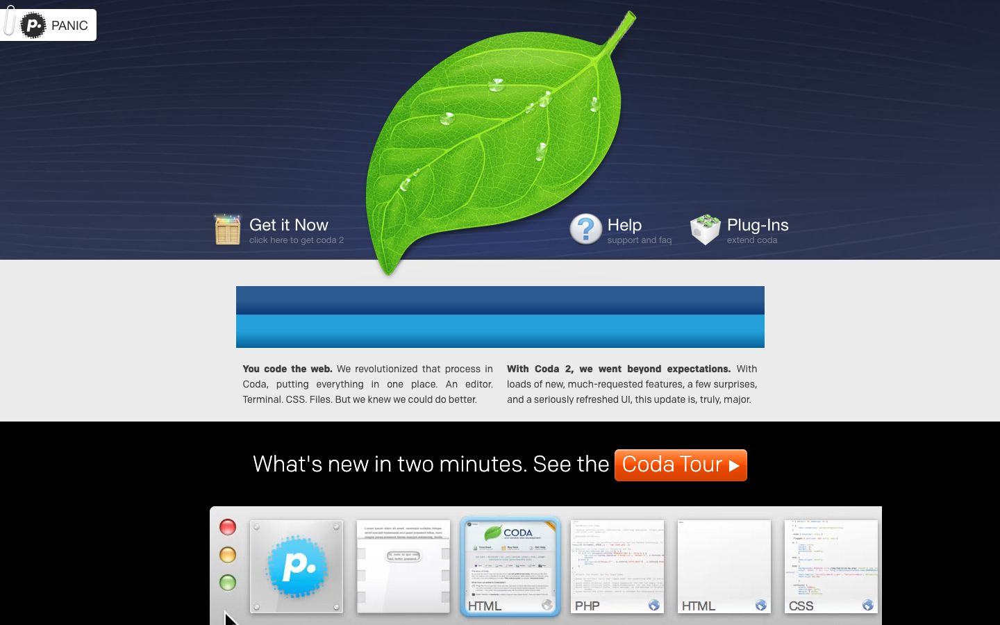

References / Website / 294
Panic Coda 2 website, 2012
Panic’s page for the web editor Coda 2, archived August 2012: a photoreal leaf with water drops on a textured navy band.
- Source
- panic.com/coda (archived copy)
- Creator
- Panic
- Made
- 2012
- Style
- Skeuomorphism (agent-proposed, not yet reviewed by a person)
- Moods
- Fresh, polished, illustrative
- Evidence
- Captured from the Internet Archive with
tools/capture.mjs(headless Chrome, 1440 × 900) on 28 September 2026 and inspected. The archived page may lack some images or scripts that the live page had. A flat blue bar in the middle is probably an image that the archive did not load. - Reviewed
- Rights
- Third-party work, stored with credit for commentary. License: unverified. Rights policy
Observed
- The top band is dark navy with fine diagonal lines like brushed fabric.
- A large photoreal green leaf with water drops, the Coda icon, hangs over the band’s lower edge onto the gray page.
- The Panic logo tab at the top left is held by a paper clip; the links have photoreal icons of a crate, a question mark, and a box.
- A gray strip at the bottom holds red, orange, and green glossy buttons and tab thumbnails with a riveted metal Panic tile.
- A flat two-tone blue bar in the middle is probably an image or animation that the archive did not load.
Why it belongs
It passes 4 of 6 metrics: patterned surfaces on 64% of boxes and gradients on 31%. Color pattern share is 0.26 and shadow share 0.18, both under the provisional minimums.
Borrow
Let a photoreal object overlap the edge between a textured header and a plain body, so the object seems to sit on the page.
Measured
Machine-extracted by tools/extract-traits.js on . Full measurement.
- Type families
- Chrono Regular (82%), Times (7%), Chrono Medium (5%)
- Type scale ratio
- 1.11
- Median radius
- 0 px
- Mean chroma
- 0.05
- Palette
- #ebebeb 62%
- #000000 15%
- #646464 10%
- #414141 3%
- #ffffff 1%
- #9b004f 1%
- #293189 1%
- #3786bf 1%

